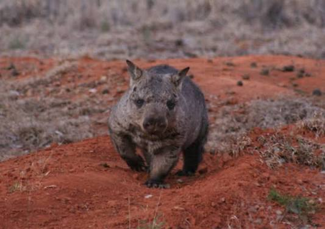
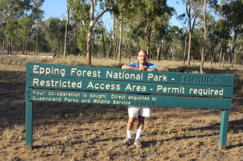
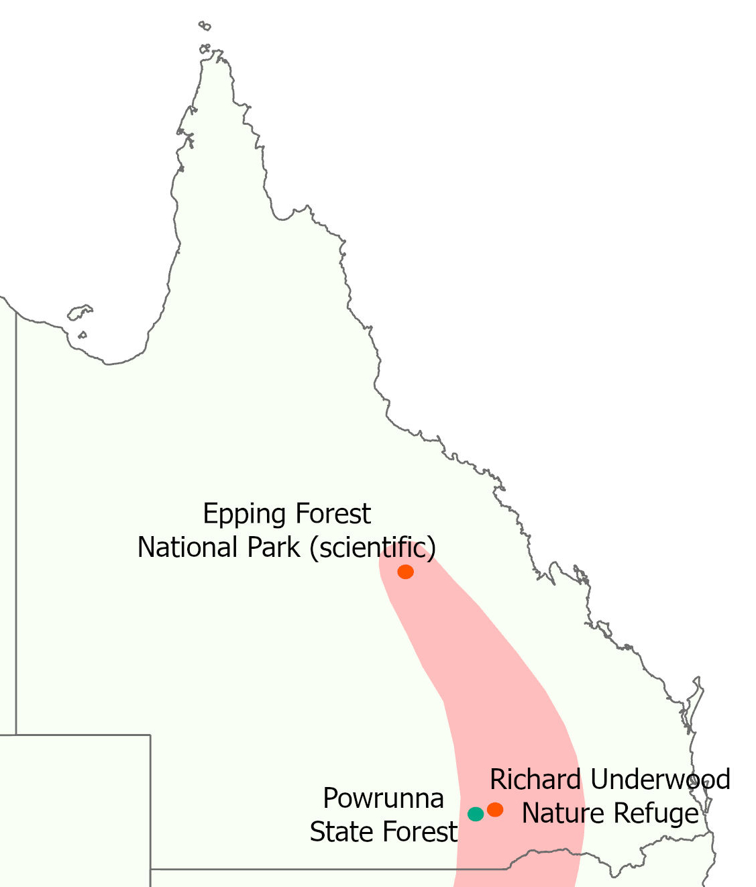
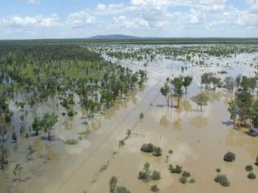

Historically the most of the loss of Northern hairy nosed wombats can be attributed to agriculture: The grasslands and eucalypt woodlands which made up their habitat were cleared for agriculture by humans
They now had less land and had to compete with large populations of grazing cattle and sheep for grasses

By 1971 these human factors had isolated the Northern hairy nosed wombats to one location: Epping Forest National park
Here their numbers were reduced to just 35 by 1980 and the Northern Hairy nosed wombat was listed as critically endangered on the IUCN red list

Since 1980 numbers have recovered to 450 wombats and moved to 2 extra sites
A low population size and a lack of genetic diversity hampered the wombat's recovery due to the possibility of inbreeding, this remains an issue

However they are unable to expand to their previously held habitats (in pale red on the map) because of wild dingo, fox and cat populations introduced by humans which keep it enclosed within the fences of nature reserves
Furthermore climate change caused by human puts even the existing sites at a risk of wildfires, droughts and flooding which occured at Epping Forest National park in 2008 (seen in image to the right) prompting the translocation to Richard Underwood Nature Refuge in the following year
All of this is why the Northern Hairy Nosed wombats remain critically endangered meaning that they are at a high risk of exctinction